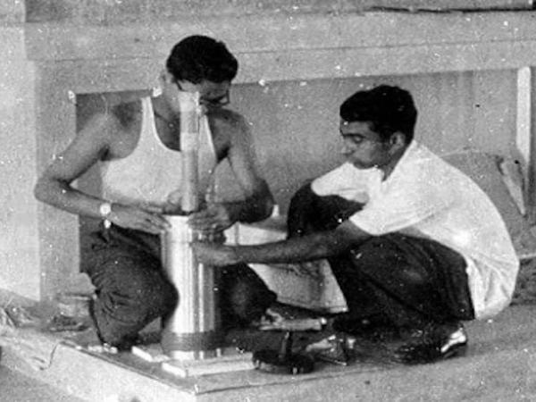
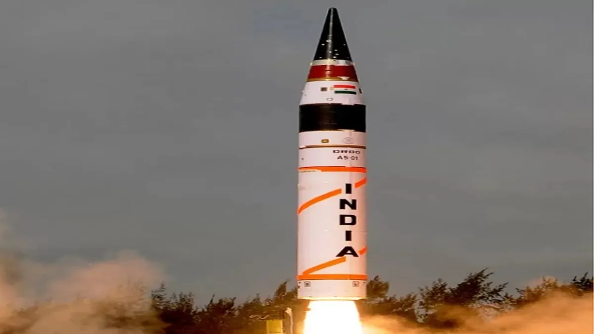
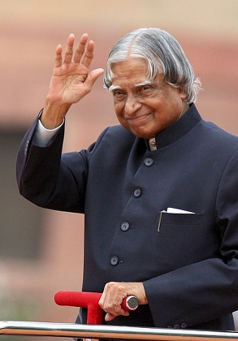

Journey Through Time
Birth
Born in Rameswaram, Tamil Nadu into a modest family that valued education and hard work.

Joined ISRO
Joined the Indian Space Research Organisation and became Project Director of India's first successful Satellite Launch Vehicle.

Missile Programme
Led India's Integrated Guided Missile Development Programme, strengthening the country's defence capabilities.

President of India
Served as the 11th President of India and became known as the People's President because of his connection with students.

Forever an Inspiration
Passed away while delivering a lecture to students, leaving behind a legacy of knowledge, humility and service.